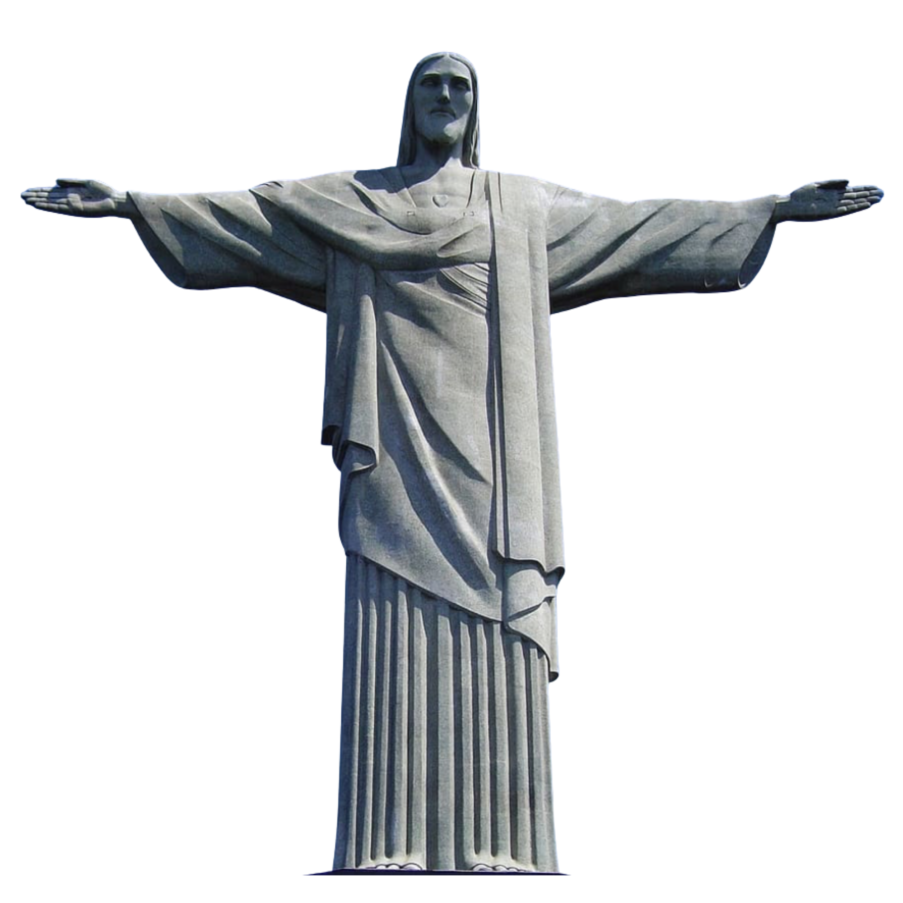
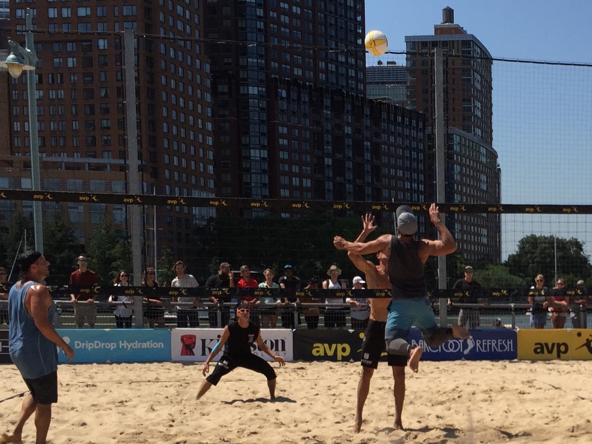

I was born and raised in Rio de Janeiro — a city that gives you, whether you want it or not, a relationship with the ocean, with sport, and with the idea that the body is something worth taking seriously. And when I look up, I see Him with "open arms over the Guanabara Bay." I've spent most of my adult life living by that idea, just in increasingly formal ways.
In 2008, I left Brazil and moved to New York. Over the next thirteen years, I made a home in different corners of New York and New Jersey, earned a master's degree from NYU, built a career and a family, played beach volleyball on open level and professional tours, and somehow also ended up doing Portuguese voice acting for a video game. In 2021, I moved to California, which felt like the logical end of a long westward drift. Later that year, I reengaged in a journey I had lost in my teen years, and I returned to the mats to train in jiu-jitsu. More on that later!
My full name — Aresio Vinicius Alencar de Souza — is a mouthful by American standards. For here, I go by Aresio Souza. Most people call me Aresio.
Career
What I Do
I'm a physical therapist and ergonomist, and my work has always lived at the intersection of human performance, safety, and organizational health — the place where how people move meets how workplaces are designed, and where both of those meet the broader question of whether people are actually thriving at work.
I hold a Bachelor's and Master's degree in Physical Therapy from universities in Brazil, and a Master of Science in Ergonomics and Biomechanics from New York University — a degree I earned after arriving in the US with no guarantee things would work out, which made finishing it mean a little more than a diploma usually does.
Over a career that has moved through clinical practice, ergonomics, risk management, insurance, and worker health and wellbeing, I've come to focus on something bigger than injury prevention alone: Total Worker Health®, a framework developed by NIOSH that integrates safety, health, and wellbeing in a way that actually reflects how people experience their work lives. I've served in leadership roles building employee health programs, integrated safety strategies, and organizational systems that treat workers as whole human beings.
More recently, I've been deepening my work at the edges of what's coming next: the role of emergent technologies and AI in how we understand, monitor, and support human performance at work — a space where my background in both clinical science and organizational health puts me in an interesting position to contribute.
On the Sand
Beach Volleyball

Yes, it's me jumping to the sky to spike that ball! Beach volleyball came naturally to anyone who grew up in Rio. I had the opportunity to play with and against the best athletes there, and I wanted to do the same here, this time as a competitive hobbyist. Playing as an adult in a country with a mature infrastructure for the sport was a different experience entirely. I have played many local tournaments since 2009 and have earned a fair number of podium finishes (1st, 2nd, and 3rd). I competed in the AVP Pro Beach Tour and the AVP Young Guns series — playing tournaments in Brooklyn, New York City, Atlantic City, and Point Pleasant — and reached a best AVP finish of 16th once.
Competing alongside professional players as an immigrant who came to the sport late in America is one of the things I'm most quietly proud of.
On the Mat
Brazilian Jiu-Jitsu
I train Brazilian Jiu-Jitsu and hold a Brown belt — a grade that represents years of consistent, humbling, and occasionally bruising dedication. I've competed at multiple levels and earned titles along the way. But the most important lesson learned is the discipline and grit that life also requires from us. More than titles and belts!

Most recently, I placed 3rd at the IBJJF World Masters Championship, a result that felt particularly meaningful given the quality of the field and what it took to get there. The World Masters brings together athletes who've chosen the long road in this sport. I'm glad to be one of them.
One Unexpected Credit
Max Payne 3
In 2012, I provided Portuguese voiceover for Max Payne 3 — Rockstar Games' noir action title set largely in São Paulo. I voiced "The Local Population," which sounds modest until you learn that Rockstar made a deliberate, well-documented effort to cast authentic Brazilian Portuguese speakers for the game's Brazilian setting.
It's a small credit on an IMDB page I'm genuinely happy exists — a reminder that a life lived across cultures opens doors you'd never think to knock on.
Two Languages, One Life
Bridging Cultures
Portuguese is the language I dream in. English is the language I argue in. Living between two cultures has shaped how I think about communication, how I show up for patients and colleagues from different backgrounds, and why making Portuguese-language resources in healthcare has always felt less like a professional choice and more like a personal one.
That includes coordinating the Portuguese translation of the PhysioU app — making its clinical resources accessible to practitioners across Brazil and the Portuguese-speaking world, helping Brazilians acquire notarized translations of documents like syllabi, transcripts, birth certificates, and more. I also helped as an interpreter for medical appointments. All of it before AI! 🤖
Let's Connect
Whether you want to talk ergonomics, Total Worker Health®, AI in the workplace,
beach volleyball, or BJJ — I'd genuinely love to hear from you.